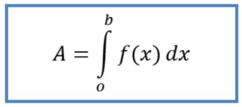

Integral adalah versi kontinu dari konsep penjumlahan, yang digunakan untuk menghitung luas, volume, dan banyak perumumannya. Integrasi atau mengintegralkan, yakni proses menghitung suatu integral, adalah salah satu dari dua operasi penting dalam kalkulus. integral adalah kebalikan dari proses turunan, yang disebut anti turunan.
Definisi integral yang paling sederhana dan banyak digunakan di kalkulus dasar serta fisika sampai sekarang adalah Integral Riem ann. Definisi ini dibuat oleh matematikawan Jerman, Georg Friedrich Bernhard Riemann.
Rumus dasar integral secara umum mengacu pada konsep dari seorang ilmuwan Jerman, Georg Friedrich Bernhard Riemann. Konsep integral ini biasa disebut dengan integral Riemann, dengan lambang integral yang secara matematis dapat dituliskan:
∫ = lambang integral
A = nilai integral dari fungsi f(x)
b = batas atas variabel yang diintegrasi
o = batas bawah variabel yang diintegrasi
f(x) = fungsi yang diintegralkan
dx = variabel yang diintegrasi
Integral memang berhubungan erat dengan turunan, tetapi tidak semua sifat pada turunan bisa digunakan untuk menyelesaikan integral matematika. Integral sendiri terbagi menjadi dua jenis, yaitu Integral Tak Tentu dan Integral Tentu. Integral tak tentu hanya berupa sebuah fungsi dalam sebuah variabel, sedangkan integral tentu menghasilkan sebuah nilai.
Integral tak tentu adalah suatu fungsi baru yang turunannya sama kayak fungsi aslinya. Integral tak tentu tidak memiliki batas dan belum punya nilai yang jelas. Nilai yang tidak jelas ini dilambangkan dengan konstanta ( C ). Sedangkan, lambang integral tak tentu nggak punya batas atas dan batas bawah, karena tidak terbatas.
Integral tak tentu nggak hanya diaplikasikan dalam matematika aja, tetapi juga fisika. Dalam bidang fisika, aplikasi integral tak tentu berguna dalam konsep jarak-kecepatan-percepatan, mengetahui f(x) kalau f'(x) dan f(a) diketahui, dan mengetahui f(x) kalau persamaan gradien garis singgung dan titik singgung diketahui.
Jika integral tak tentu belum punya nilai yang pasti, integral tentu kebalikannya. Integral tentu adalah integral yang sudah memiliki nilai awal dan akhir, punya batas yang jelas, tidak seperti integral tak tentu. Integral tentu punya batas atas dan batas bawah, yang lambang integralnya ab, Dengan B adalah batas atas variabel integrasi, dan A adalah batas bawahnya.
Integral tentu biasanya digunakan buat menghitung luas daerah yang nggak beraturan dan volume benda putar:
Setelah mengetahui sifat integral, sekarang kita lanjut belajar dari contoh soal. Perhatikan contoh soal integral berikut.
1. Hasil dari ∫(x3 − 6x2 + 4x + 5)dx adalah ....
2. Diketahui turunan dari suatu fungsi f(x) = 3x2 − 6x + 1. Jika f(−1) = 2, maka fungsi f(x) = ....
3. Hasil dari 3∫1 (6x2 + 8x + 3)dx = ....